Create Application Using Hyperconsole
Introduction
⭐ This page explains in simple steps, how you can create a new child application in Emgage using the Using App Builder feature.
⭐ After completing this page, you should be able to do the following tasks.
➡️ Create a new draft app.
➡️ Create and Publish a new app.
➡️ Search an app.
➡️ Publish a draft app.
➡️ Discard a draft app.
➡️ Delete an app.
Pre-Reqs
✅ User must be logged in.
✅ User must have necessary permissions.
Step-by-Step Instructions
Create a new draft app
- From the Dashboard, navigate to;
Left Nav Barand click theSelect Appbutton. You will see a screen as shown below. 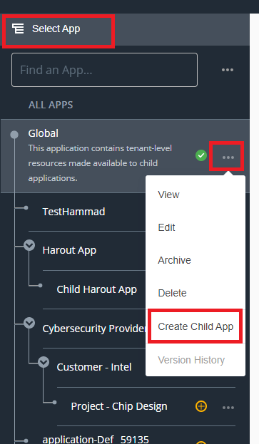
Click the
Three Dots (...).Select
Child Appoption from the menu.- The system will initialize an application wizard that will create your application in the background.
- This may take a little while to process.
Once complete, you will see a screen as shown below.
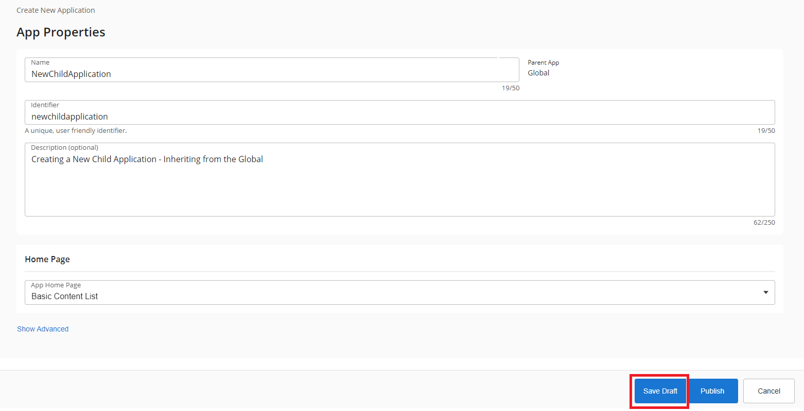
- To save the newly created application as a draft, click the
Save Draftbutton.- Note: The draft application is available to the current user only.
- To close this screen without saving, click the
Cancelbutton.
- That's it, you have successfully created your first draft app using Emgage.
Create and Publish a new app
From the Dashboard, navigate to
Left Nav Barand click theSelect Appbutton. You will see a screen as shown below.
Click the
Three Dots (...).Select
Child Appoption from the menu.- The system will initialize an application wizard that will create your application in the background.
- This may take a little while to process.
Once complete, you will see a screen as shown below.
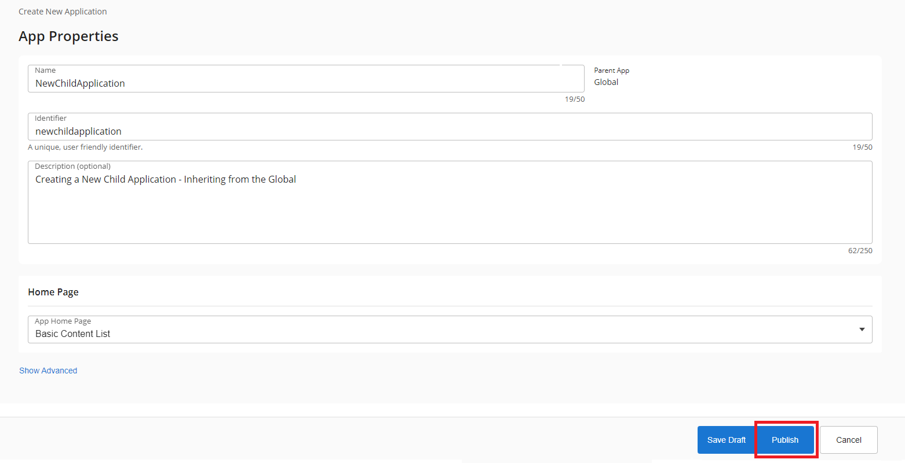
To directly Publish the new app, click the
Publishbutton.That's it, you have successfully created and Published your first app using Emgage.
Search an app
From the Dashboard, navigate to
Left Nav Barand locate theFind an Appsearch bar as shown in the figure below.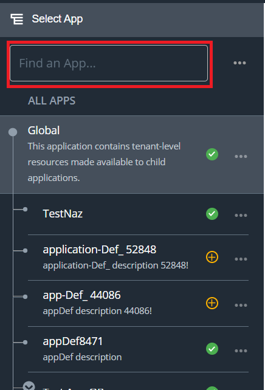
Type in the name of the app that you need to search. The Emgage system will filter all apps that match your specific search criteria. Please refer to the figure shown below.
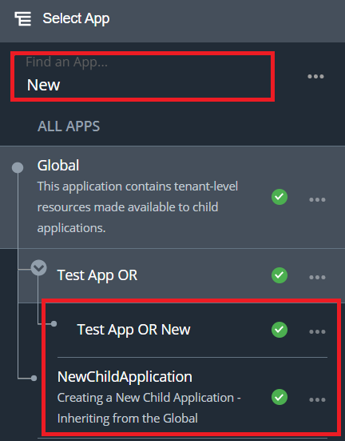
Publish a draft app
From the Dashboard, navigate to
Left Nav Barand locate theFind an Appsearch bar as shown in the figure below.
Type in the name of the app that you need to search. The Emgage system will filter all apps that match your specific search criteria. Please refer to the figure shown below.
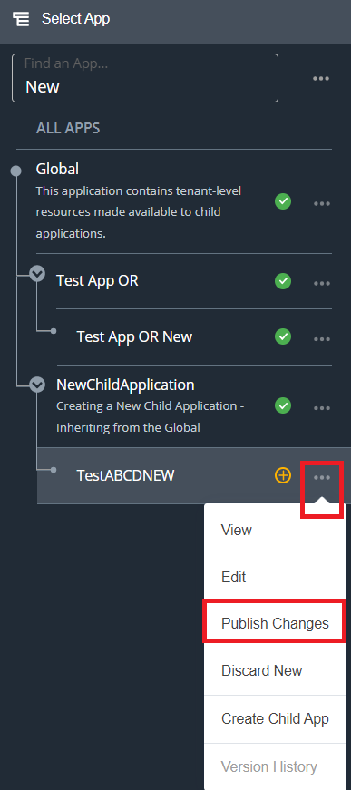
- To Publish the app, click the
Publish Changesbutton.- This may take a little while to process.
- Once complete, you will see your app in the
Left Nav Bar
Or alternatively, click the application to view the screen as shown below. Click the
Publish Changesbutton to Publish the draft app.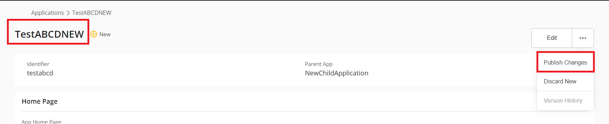
Discard a draft app
From the Dashboard, navigate to
Left Nav Barand locate theFind an Appsearch bar as shown in the figure below.
Type in the name of the app that you need to search. The Emgage system will filter all apps that match your specific search criteria. Please refer to the figure shown below.
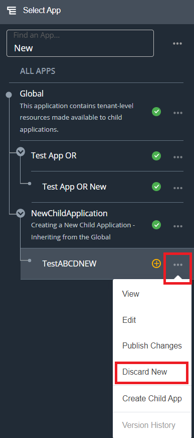
- To discard the newly created draft app, click the
Discard Newbutton.- This may take a little while to process.
Or alternatively, click the application to view the screen as shown below. Click the
Discard Newbutton to discard the draft app.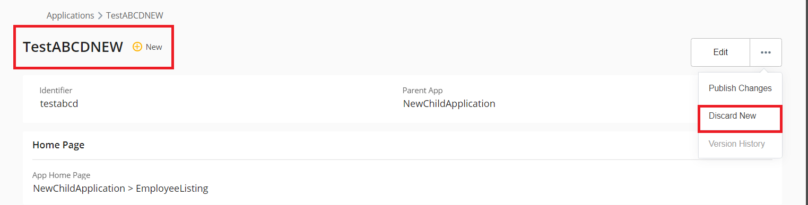
Delete an app
From the Dashboard, navigate to
Left Nav Barand locate theFind an Appsearch bar as shown in the figure below.
Type in the name of the app that you need to search. The Emgage system will filter all apps that match your specific search criteria. Please refer to the figure shown below.
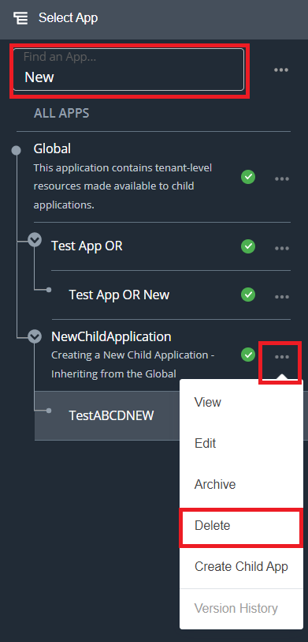
- To Delete the Published app, click the
Deletebutton.- This may take a little while to process.
Or alternatively, click the application to view the screen as shown below. Click the
Deletebutton to Delete the app.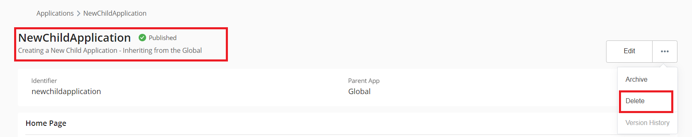